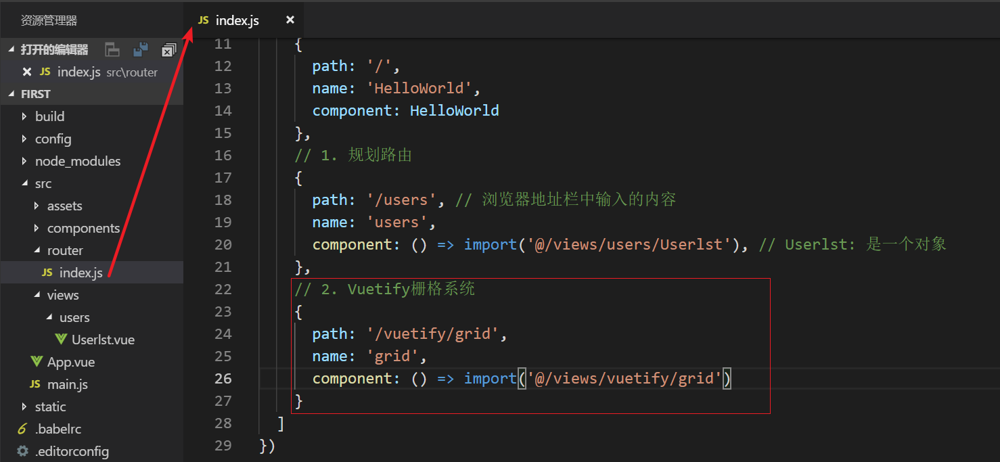

1.接口编程简介
1.1 背景
随着互联网的发展, 尤其是移动互联为代表的Web3.0时代. 客户端层出不穷, 以APP、微信、PC浏览器为代表, 服务端业务逻辑是基本一致的.
那么有没有一种方式可以做到”一次编写,随时接入”呢?
目前比较流行的方案就是"接口编程"
1.2 什么是接口编程
一般来说接口编程是基于HTTP协议, 通过某个唯一标识符(URI)请求对应的服务器资源(Resource).
1.2.1 什么是URI
在HTTP协议中, URI的组成如下
Schema://host[:port]/path[?query-string]- Schema: 使用的协议类型, 如http/https/ftp等 host: 主机域名或IP port: 端口号(可选) path: 路径
- query-string: 查询参数(可选)
例子:
https://api.local.com:8080/articles?id=100
URI与URL的区别
URI标准, schema支持ftp/ssh等协议类型
URL: schema只能是http
1.2.2.什么是资源
- 狭义上讲, 所有在服务器保存的数据(如:音乐/视频/文章/个人信息...)都是服务器端资源.
- 广义上讲, 任何服务器端的对象(如:应用程序/数据库记录/算法...)都可以看作资源.
还是比较不好理解, 咱们举例说明
比如, 我们之前学习过的Jquery+ajax, 就是早期的前后端分离的解决方案
Step1. 创建项目目录
在apache的根目录下创建一个文件夹, 以日期命名, 20181112
Step2. 创建ajax.html
1) 发送ajax请求
2) 将获取的数据渲染到页面
由于使用jquery封装的ajax. 首先得引入jquery
复制到项目目录

引入jquery

Step3. 使用jquery发送ajax

Step4. 编写test.php

调试
Step5. 渲染页面

ajax.html
xxxxxxxxxx<html lang="en"><head> <meta charset="UTF-8"> <meta name="viewport" content="width=device-width, initial-scale=1.0"> <meta http-equiv="X-UA-Compatible" content="ie=edge"> <title>Document</title> <!-- 1. 引入jquery.js --> <script src="./jquery.min.js"></script></head><body> <!-- 4. 渲染页面 --> 从有服务器收到的数据是: <div id="app"></div> <!-- 2. 使用jquery发送ajax --> <script> $(function () { $.ajax({ url: 'http://localhost/20181112/test.php', type: 'get', dataType: 'json', success: function (resp) { // 3. 从服务器接收数据, 渲染到页面 console.log(resp) $('#app').html(resp.name) } }) }) </script></body></html>test.php
xxxxxxxxxx<?php// 返回json格式的数据echo json_encode(['name'=>'鸣人']);在上面这个例子中,
URI: http://localhost/20181111/test.php
资源: 服务端返回的数据
1.3 接口编程的作用
主要是实现了前后端的分离
后端(服务器)为前端(APP端/PC浏览器端/微信端)提供一个简单并且统一的方式(URI), 返回前端需要的数据(Resource).这样不管是APP还是Web浏览器, 只需要通过HTTP协议都可以实现同样的操作.
2.RESTful设计六要素
是不是所有前后端分离的设计都叫RESTful呢? 不是!!!
ful是一个后缀, 意思是"像什么一样的" windful
RESTful是一种软件设计风格, 主要用于有客户端与服务端交互的软件. 主要包括6个方面
- 资源路径(URI)
- HTTP动词(Method)
- 过滤信息(query-string)
- 状态码(Status-code)
- 错误信息(Error)
- 返回结果(Result)
如下图所示:
如果一个软件符合这些约定(风格), 我们就说这个软件是RESTful的
2.1 资源路径
标准的RESTful API中, 每个资源路径对应一个唯一的资源, 所以规定网址中不能有动词, 只能有名词, 并且一般来说为复数.
比如:
http://api.local.com/movies----表示电影资源
http://api.local.com/images----表示图片资源
http://api.local.com/musics----表示音乐资源
http://api.local.com/articles----表示文章资源
2.2 Http动词
对于资源, 一般有4个操作, CURD(增/删/改/查)
GET: 从服务器获取资源(一项或多项)
POST: 在服务器新建一个资源
PUT: 在服务器更新资源, 服务器返回完整的属性
DELETE: 从服务器删除资源
HEAD: 从服务器获取信息(响应头)
PATCH: 在服务器更新资源, 服务器只返回更新的属性
例子:
POST /articles -- 创建文章内容
GET /articles/1 -- 获取主键id为1的文章
2.3 过滤信息(请求数据)
当服务端需要返回的数据很多时, 服务器不可能全部返回
此时, 我们可以在客户端携带过滤信息, 比如: 分页信息
例子:
?page=1 -- 第一页的信息
?offset=10&per_page=10 -- 每页10条, 偏移10
2.4 响应状态码
服务端返回的信息, 用来告诉客户端操作结果
| 状态码 | 含义 | 说明 |
|---|---|---|
| 200 | OK | 操作成功, 并返回数据 |
| 201 | CREATED | 新建成功 |
| 204 | NO CONTENT | 删除成功 |
| 400 | BAD REQUEST | 请求语法错误 |
| 403 | Forbidden | 请求没有权限的资源 |
| 404 | NOT FOUND | 没有找到请求的资源 |
2.5 错误处理
如果状态码是4xx或者5xx, 需要告诉客户端对应的错误信息. 以Json格式返回
{
“error”: “错误信息”,
}
2.6 返回结果
针对不同的操作, 服务需要返回的结果应该符合这样的规范
GET /collections -- 返回资源列表(数组)
GET /collections/:id -- 返回单个资源 eg. /collections/1
POST /collections -- 返回新生成的资源
PUT /collections/:id -- 返回资源的完整属性
PATCH /collections/:id -- 返回被修改的属性
DELETE /collections/:id -- 返回204状态码+空文档
3.工具
这里给大家安利一个工具postman. 这个是在接口编程中使用非常多的一个工具
Postman是一个非常好用的免费API测试工具. 主要用于模拟发送Http请求.
官网地址: https://www.getpostman.com/
4.前后端分离与接口文档
4.1 什么是前后端分离
所谓前后端分离, 如下图所示:

由上图可知, 一个项目有两个服务器
前端服务器: 显示页面
后端服务器: 提供数据
通过API接口实现前后端的交互!
4.2 前后端分离的好处
- 提高开发效率: 前后端开发人员可是同时开发, 互不影响
- 提高复用性: 后端通过统一的API提供数据, 这样可以同时为web前端/app前端/微信端提供数据
4.3 接口文档
在实战环节, 咱们使用Restful的设计风格, 实现用户模块的CURD
咱们去公司之后, 经常会面临写接口文档的工作, 那么咱们看下接口文档怎么写
见附件: API接口文档.md
前端: vue+axios
后端:json-server
5.项目准备
5.1 使用npm安装vue
5.1.1.安装node
找到软件包中的node-v8.12.0-x64.msi, 双击安装

下一步, 到安装完成. 安装完成后, 可以使用如下命令测试

node是一个js的运行环境, 这里我们安装node主要是需要其中的npm包管理工具
5.1.2.配置npm镜像
npm默认的仓库地址是在国外网站，速度较慢，建议大家设置到淘宝镜像。但是切换镜像是比较麻烦的。推荐一款切换镜像的工具：nrm
我们首先安装nrm，这里-g代表全局安装
xxxxxxxxxxnpm install nrm -g
全局安装后, 会在如下目录, 产生如下文件
然后, 我们就可以使用nrm命令了

通过nrm ls命令查看npm的仓库列表,带*的就是当前选中的镜像仓库：

通过nrm use taobao来指定要使用的镜像源：

注意：
- 有教程推荐大家使用cnpm命令，但是我使用发现cnpm有时会有bug，不推荐。
5.1.3.创建项目
在D盘, 新建一个文件夹code. 打开, 按住shift+鼠标右键, 打开sh窗口

注意: 路径中不要出现中文
5.1.4.初始化
使用如下指令初始化
xxxxxxxxxxnpm init -y
发现在目录下会多一个文件package.json, 这个文件用来管理该项目使用了哪些包

5.1.5.安装vue
执行如下命令安装vue
xxxxxxxxxxnpm install vue --save
以上命令可以简写为
xxxxxxxxxxnpm i vue -S
在项目目录会产生一个文件夹node_modules和一个文件package-lock.json

在package.json文件中, 会多如下内容

在node_modules里就是vue了
小结
总结起来, 使用npm安装一共是两步
1.初初始化: npm init -y
2.安装 npm install vue --save
5.2 使用npm安装json-server
json-server是一个简易的后台服务器, 咱们使用它模拟API接口服务器
执行命令
xxxxxxxxxxnpm i json-server -g
参数说明:
- i: install的简写
- json-server : 包的名称
- -g: 全局安装
安装完成后, 在C:\Users\Administrator\AppData\Roaming\npm目录下出现
表明可以使用全局命令json-server来启动一个API服务器
5.2.1.编写数据文件
创建一个db.json
示例代码:
xxxxxxxxxx{ "users": [ { "id": 1, "name": "鸣人", "age": 12 }, { "id": 2, "name": "佐助", "age": 11 } ]}5.2.2.启动json-server
在vscode中, 使用ctrl+`打开终端, 执行
xxxxxxxxxxjson-server --watch db.json
使用db.json做为数据文件, 提供接口
5.2.3.使用postman测试
列表接口:

添加接口:
使用post方式请求, 并且携带添加的数据
返回201, 表示添加成功
修改接口:
使用put请求, 在URL地址的后面加上要修改的id, 并携带要修改的数据
返回200, 表示修改成功, 并且返回修改之后的数据
删除接口:
使用delete请求, 在URL地址的后面加上要修改的id
返回200, 表示删除成功

6. Vue-cli初步
6.1什么是Vue-cli
从字面上理解: 就是Vue的命令行工具.
官网: https://cli.vuejs.org/zh/guide/
Vue CLI 是一个基于 Vue.js 进行快速开发的完整系统
说明: Vue-cli和Vue/cli的区别
- Vue-cli是2.0的版本
- Vue/cli是最新3.0的版本
由于前端项目发展特别快, 在准备这个课程的过程中, Vue cli进行了一次升级, 所以我们在本课程中使用的是2.0的版本. 大致功能区别不大, 学会了以后可以再学习3.0的版本
6.2 Vue-cli的作用
基于Vue快速构建一个标准的前端项目
6.3 Vue-cli的安装
6.3.1.打开命令行窗口
输入如下命令安装
xxxxxxxxxxnpm i vue-cli -g
参数说明:
- i: install的简写
- vue-cli : 包的名称
- -g: 全局安装
出现如下效果表明安装完成
在C:\Users\Administrator\AppData\Roaming\npm目录下, 会多出这样几个文件
我们就可以在全局使用vue/vue-init/vue-list这些指令了.
其中, 主要是使用vue指令完成前端项目的生成
6.3.2.测试
在全局执行如下命令,
xxxxxxxxxxvue --version
如下图所示

6.4 小结
- vue-cli用来快速构建基本的前端项目
- 使用npm i vue-cli -g安装vue-cli工具
7.vue-cli的使用
7.1 创建项目
使用Vue-cli创建前端项目非常简单, 只需要执行一个命令就可以了
7.1.1. 打开cmd窗口
在桌面, shift+右键, 打开一个cmd窗口

7.1.2. 执行命令
xxxxxxxxxxvue init webpack first
参数说明:
- init: 创建项目
- webpack: 基于webpack模板
- first: 项目名称

7.1.3. 设置项目名称
接上一步, 在输入命令后, 经过一段时间, 会出现如下提示
设置项目的名称, 询问是否使用”first”做为项目名称, 直接按回车
7.1.4. 设置项目描述
接上一步, 回车后, 出现如下提示
询问是否使用”A vue.js project”做为项目描述, 可以直接按回车, 或者输入一些描述信息

比如: 我们可以输入:”My first vue project”回车

7.1.5. 设置项目作者
接上一步, 回车后, 出现如下提示
7.1.6. 设置编译项
接上一步, 回车后, 出现如下提示, 直接按回车, 选择默认值

在这里, 使用上下按键选择
使用默认值, recommended for most users ---- 推荐大部分用户使用
7.1.7. 是否使用vue-router
接上一步, 回车后, 出现如下提示
按回车, 选择Y, 使用!!!
7.1.8. 是否使用ES语法检测规则
接上一步, 回车后, 出现如下提示

输入n, 回车. 不使用语法规则检测.
这里强烈推荐大家在初学的时候, 不使用这个检测!!! 这个规则非常严格, 特别容易出错
7.1.9. 是否使用单元测试
接上一步, 回车后, 出现如下提示

输入n, 回车, 不使用单元测试
7.1.10. 是否使用点对点测试
接上一步, 回车后, 出现如下提示

输入n, 回车, 不使用点对点测试
7.1.11. 使用NPM安装所有的依赖包
接上一步, 回车后, 出现如下提示

开始安装

安装完成, 出现如下提示

7.1.12. 测试
进入到first目录
执行命令

在浏览器中输入http://localhost:8080, 打开项目

在cmd命令窗口中, 按ctrl+c, 停止项目
输入y 回车, 就可以停止项目
小技巧
- 在运行项目的同时, 打开浏览器
- 制作启动命令
- 修改package.json, 在dev选项后加上--open


- 制作一个start.bat文件, 编写如下内容

提示
- 由于要下载比较多的文件, 容易受到网络的影响而失败. 如果失败, 删除目录后重新执行命令
- 不要关闭cmd命令, 一旦关闭, 项目就停止了
7.2 目录结构
基于webpack创建的前端项目的目录结构如下:
我们主要的工作目录就是src, 其他的文件是跟打包相关的
7.3 启动过程分析

index.html: 项目唯一的html, 也是整个单页应用(SPA)的入口
在index.html中只定义了一个div, id=app, 等待被vue渲染
main.js: webpack打包的入口
定义一个vue对象(Root)
一个router, router从router/index.js导入, 使用vue-router进行组件导航
挂载了一个子组件: App, App从App.vue导入
App.vue: 是所有子组件的祖先
定义一个锚点
当我们访问某一个path时, vue-router会把HelloWorld组件替换App.vue中定义的锚点
要编写的步骤
- 规划路由
- 编写组件
7.4.创建自定义路由
7.4.1. 规划路由规则
在src/router/index.js中, 添加一条路由规则, 如下
7.4.2. 定义组件
一般地, 为了项目的规范化, compents目录存放公共的组件, 新创建一个views目录存放业务相关组件, 在views下根据模块创建不同的文件夹.
1) 在src下创建views目录
2) 在views目录下创建users目录
3) 在users目录下创建Userlst.vue(用户列表组件)
7.4.3. 导入Userlst组件

在index.js中使用”import from”语法导入Userlst组件
示例代码:
xxxxxxxxxximport Userlst from '@/views/users/Userlst'
说明:
- Userlst : 表示一个对象, 可以在下面的代码中使用
- @: 表示src的绝对路径
- Userlst: 表示Userlst.vue一般不加后缀
7.4.4. 测试

补充: 导入的另一种写法
使用一个匿名函数, 返回导入的对象

使用ES6的语法, 进一步简化为:
8.Vuetify初步
Vue负责的是虽然会帮我们进行视图的渲染，但是样式是有我们自己来完成。这显然不是我们的强项，因此后端开发人员一般都喜欢使用一些现成的UI组件，拿来即用，常见的例如：
- BootStrap
- LayUI
- EasyUI
- ZUI
然而这些UI组件的基因天生与Vue不合，因为他们更多的是利用DOM操作，借助于jQuery实现，而不是MVVM的思想。
而目前与Vue吻合的UI框架也非常的多，国内比较知名的如：
- element-ui：饿了么出品
- i-view：某公司出品
然而我们都不用，我们今天推荐的是一款国外的框架：Vuetify
官方网站：https://vuetifyjs.com/zh-Hans/
8.1.为什么是Vuetify
有中国的为什么还要用外国的？原因如下：
- Vuetify几乎不需要任何CSS代码，而element-ui许多布局样式需要我们来编写
- Vuetify从底层构建起来的语义化组件。简单易学，容易记住。
- Vuetify基于Material Design（谷歌推出的多平台设计规范），更加美观，动画效果酷炫，且风格统一
这是官网的说明：
缺陷：
- 目前官网虽然有中文文档，但因为翻译问题，几乎不太能看。
8.2 Vuetify的安装
按照官网的介绍, 使用npm安装
在项目中, 使用ctrl+`, 打开命令行, 运行
xxxxxxxxxxnpm i vuetify -S

出现这个界面表明安装成功
8.3 Vuetify的引用
按照官网的说明, Vuetify的引用分为两个步骤
- 导入vuetify包
- 导入css文件
在项目入口文件main.js中编写如下代码
xxxxxxxxxx// 1. 导入vuetify包import Vuetify from 'vuetify'// 2. 使用VuetifyVue.use(Vuetify)// 3. 导入css样式import 'vuetify/dist/vuetify.min.css'8.4 测试
在官网中找到btn(按钮), 在页面中测试使用
https://vuetifyjs.com/en/components/buttons#introduction
找到自定义组件Userlst.vue, 编写模板内容
xxxxxxxxxx<template> <div> <v-btn color="success">成功</v-btn> </div></template>我们发现, 出现了一个按钮, 但是颜色好像不对
原因是什么呢?
在官网中有介绍, 需要使用<v-app>标签
xxxxxxxxxx<template> <v-app> <v-btn color="success">成功</v-btn> </v-app></template>颜色变正常了, 依然有些小瑕疵, 大小是一整行. 不过没关系, 至少证明咱们的vuetify生效了. 后面再来解决这个问题
小结
- 安装vuetify
- 导入vuetify
- 使用vuetify的标签
补充:
Auto close tag插件: 自动闭合标签
Auto rename tag插件: 自动重命名标签
9.Vuetify中的栅格系统
一般来说, 学习一个UI框架主要是3个方面
- 布局
- 表格
- 表单
第一个需要了解的就是布局, 要实现布局就离不开栅格系统(弹性盒子flex)
查看一下官网的定义: https://vuetifyjs.com/zh-Hans/layout/grid
1) 什么是12点的栅格系统?
将一行分成12份, 如果只有一个元素就占12份, 二个元素就平分12份, 每个占6,依次类推
2) 弹性盒子(flex-box)
使用弹性盒子可以非常方便的实现各种对齐
垂直方向:
- align-start 垂直方向居上对齐
- align-center 垂直方向中间
- align-end 垂直方向居下对齐
水平方向:
- justify-start: 水平方向居左对齐
- justify-center: 水平方向居中对齐
- justify-end: 水平方向居右对齐
在Vuetify中, 是一个12点栅格, 主要有3个标签
<v-container>: 表示一个容器<v-layout>: 表示一行<v-flex>: 表示一列
9.1 单行单列布局
9.1.1.规划路由
编写router/index.js. 添加一条路由规则

xxxxxxxxxx// 2. Vuetify栅格系统{ path: '/vuetify/grid', name: 'grid', component: () => import('@/views/vuetify/grid')}- path: 在浏览器地址栏中输入的路径
- component: 对应的组件, views/vuetify/grid.vue
9.1.2.创建一个组件
在views目录下创建vuetify目录, 再创建grid.vue文件
9.1.3.编写模板内容
编写如下内容

测试效果如下:
把vue logo去掉
找到App.vue, 删除img标签
xxxxxxxxxx<template> <div> <!-- v-container: 布局容器 --> <v-container> <!-- v-layout: 行元素 --> <v-layout> <!-- v-flex: 列元素 --> <v-flex> <!-- v-card: 卡片元素, 用来展示内容 --> <v-card color="red">第一行 第一列</v-card> </v-flex> </v-layout> </v-container> </div></template>其中, 使用到了<v-card>, 主要用来展示内容. 咱们可以给一个红色
9.1.4.测试

9.2 多行多列布局
9.2.1.备份grid
复制grid.vue, 改名grid1.vue
9.2.2.编写模板内容
xxxxxxxxxx<template> <div> <!-- v-container: 布局容器 --> <v-container> <!-- v-layout: 行元素 --> <v-layout> <!-- v-flex: 列元素 --> <v-flex> <!-- v-card: 卡片元素, 用来展示内容 --> <v-card color="red">第一行 第一列</v-card> </v-flex> <v-flex> <v-card color="blue">第一行 第二列</v-card> </v-flex> </v-layout> <v-layout> <v-flex> <v-card color="red">第二行 第一列</v-card> </v-flex> <v-flex> <v-card color="blue">第二行 第二列</v-card> </v-flex> </v-layout> </v-container> </div></template>9.2.3.测试
9.3 container属性
9.3.1.备份grid
复制grid.vue, 改名grid2.vue
9.3.2.间距属性
grid-list属性: 取值范围从xs 到 xl. xs表示极小 sm表示小 md表示中 lg表示大 xl表示极大
测试如下
9.3.3.字体对齐
text-xs-center: 文字居中对齐
测试如下:
9.4 响应式布局
响应式布局主要是用来控制在不同的设备中的显示状态
举例: 指一套代码既可以适应iphone, 也可以适应ipad, 还可以适应pc, 并且在不同的设备上显示效果还不一样
通过<v-flex>的属性来调整, 跟bootstrap是一样的
看这样一段代码
xxxxxxxxxx<v-flex xs3 sm6 md9> <v-card color="red">第一行 第一列</v-card></v-flex><v-flex xs9 sm6 md3> <v-card color="blue">第一行 第二列</v-card></v-flex>在<600的时候, 第一列占3份, 第二列占9份

在600~960之间时, 第一列占6份, 第二列占6份
在>960时, 第一列占9份, 第二列占3份
9.5 layout属性
layout的属性可以用来控制flex元素的对齐方式, 水平居中,垂直居中...
咱们来看这样一段代码
xxxxxxxxxx<v-layout wrap justify-center> <v-flex xs3> <v-card color="red">第二行 第一列</v-card> </v-flex> <v-flex xs10> <v-card color="blue">第二行 第二列</v-card> </v-flex></v-layout>- wrap: 当超过12格时, 是否换行显示. wrap表示换行, 不加wrap(默认值)表示不换行
- justify-center: 水平居中
效果如下:

9.6 偏移与位置
看下面的代码
xxxxxxxxxx<v-layout> <v-flex xs2 offset-xs10> <v-card color="orange">成功</v-card> </v-flex></v-layout>- xs2: 表示占2列
- offset-xs10: 表示左边空10列, 效果如下
10.列表显示
10.1 需求分析
实现一个用户列表功能
- 以表格的形式展现
- 在操作部分有”编辑”和”删除”的入口
效果如下
思路分析:
- 页面由两部分组件(工具栏+表格)
- 数据是通过axios从服务器端获取的
10.2 具体实现
10.2.1.Vuetify中的表格
https://vuetifyjs.com/zh-Hans/components/data-tables
基本标签<v-data-table>
分析下面这段代码
xxxxxxxxxx<template> <v-data-table :headers="headers" :items="desserts" hide-actions class="elevation-1" > <template slot="items" slot-scope="props"> <td></td> <td class="text-xs-right"></td> <td class="text-xs-right"></td> <td class="text-xs-right"></td> <td class="text-xs-right"></td> <td class="text-xs-right"></td> </template> </v-data-table></template>data-table的属性
- headers加: 表示绑定了headers属性(代表表头信息)
- items加: 表示绑定了desserts属性(代表数据源)
- hide-actions: 表示不使用分页
- class="elevation-1" 显示层级, 直观上看就是阴影效果
template: 这是一个插槽, 用来渲染每一行数据
咱们可以先仿照着写一下
html部分
x<template> <v-app> <!-- 渲染一个表格 --> <!-- v-data-table headers属性 : 表头信息, 是一个数组 items属性: 表格数据, 是一个数组 hide-actions属性: 不显示分页信息 class属性: 样式elevation-1(悬浮效果) --> <v-data-table :headers="headers" :items="users" hide-actions class="elevation-1" > </v-data-table> </v-app></template>由于这里需要绑定数据, 所以需要在属性中先定义
js部分
xxxxxxxxxx // 2. js export default { data() { return { headers: [], // 表头信息 users: [], // 表格数据 } } }效果:
10.2.2.制作表头

分析上面的代码,
一个对象就是表中的一列
xxxxxxxxxx{ text: 'Dessert (100g serving)', align: 'left', sortable: false, value: 'name'}- text: 显示的文本信息(必填)
- align: 对齐方式
- sortable: 是否可以排序
- value: 对应的字段
尝试一下
xxxxxxxxxx{ text: 'id', sortable: true, value: 'id'}id出现了, 但是这里出现了一个arrow_upward, 而页面中应该是一个箭头

咱们先把其它的表头写了, 等下来解决这个问题
xxxxxxxxxxheaders:[ { text: 'id', sortable: true, value: 'id' }, { text: '姓名', value: 'name', }, { text: '年龄', value: 'age' }, { text: '操作', sortable: false }],测试效果:

10.2.3.解决小箭头的问题
查看元素, 发现这个

这个material-icons是一些字体文件, 需要安装一下
参考文档:
https://vuetifyjs.com/zh-Hans/framework/icons
首先安装, 然后导入
执行命令
npm install material-design-icons-iconfont -D

在main.js中导入
import 'material-design-icons-iconfont/dist/material-design-icons.css'

正常显示了
10.2.4.模拟数据
首先在data里模拟一些数据
xxxxxxxxxxusers:[ { id: '1', name: '鸣人', age: 12 }, { id: '2', name: '佐助', age: 11 }]然后在html中, 使用template标签渲染
xxxxxxxxxx<template slot="items" slot-scope="props"> <td></td> <td></td> <td></td></template>测试如下
10.2.5.制作操作按钮
查找文档
可以找到icon, 这些图标都是符合google的Material设计的,
https://material.io/tools/icons/?style=baseline 这个网址打开的非常慢, 这里我直接告诉大家了
<v-icon small>edit</v-icon> <v-icon small>delete</v-icon>
- small表示小号
- edit对应小铅笔图标
- delete对应垃圾桶图标
测试效果

10.2.6.通过axios请求数据
安装axios
执行命令
npm install axios --save

导入axios
xxxxxxxxxximport axios from 'axios'编写一个方法getData
xxxxxxxxxxmethods: { getData() { // get: 发送get请求 // 参数 url // then: 成功的回调 axios.get('http://localhost:3000/users').then(resp => { //console.log(resp) // 解构resp const {status, data} = resp // 判断status的状态 if (status == 200) { // 赋值 this.users = data } }) }},使用生命周期函数created()初始化数据
xxxxxxxxxxcreated() { this.getData()}测试结果

10.2.7.优化
使用layout布局使表格居中
xxxxxxxxxx<v-layout justify-center> <v-flex xs10> 表格 </v-flex></v-layout>11.添加用户
11.1 需求分析
设计一个添加用户的按钮
当点击按钮时, 出现添加用户的表单
填写相应的数据, 调用接口, 保存到服务器
11.2 Vuetify中toolbar
https://vuetifyjs.com/zh-Hans/components/toolbars
分析如下代码
xxxxxxxxxx<template> <v-toolbar> <v-toolbar-side-icon></v-toolbar-side-icon> <v-toolbar-title>Title</v-toolbar-title> <v-spacer></v-spacer> <v-toolbar-items class="hidden-sm-and-down"> <v-btn flat>Link One</v-btn> <v-btn flat>Link Two</v-btn> <v-btn flat>Link Three</v-btn> </v-toolbar-items> </v-toolbar></template><v-toolbar-side-icon>是工具栏图标<v-toolbar-title>是标题<v-toolbar-items>是内容
尝试一下
在Userlst.vue中编写工具栏
xxxxxxxxxx<v-toolbar> <v-toolbar-title>用户列表</v-toolbar-title> <v-toolbar-items> <v-btn>添加用户</v-btn> </v-toolbar-items></v-toolbar>测试效果

进一步优化
xxxxxxxxxx<v-toolbar dark color="primary">- color: 颜色, primary就是主要的颜色
- dark: 主题, 黑色主题的字是白色的
xxxxxxxxxx<v-spacer></v-spacer>使用占位符来对齐
xxxxxxxxxx<v-btn flat>添加用户</v-btn>在按钮上加上flat, 去掉背景, 效果如下:
11.3 按钮点击事件
在按钮中有一个to属性, 可以直接指定一个router-link
xxxxxxxxxx<v-btn flat to='/users/add'>添加用户</v-btn>11.4 规划路由
在router/index.js中规划一个路由
xxxxxxxxxx{ path: '/users/add', name: 'addUser', component: () => import('@/views/users/UserAdd')},11.5 创建UserAdd组件
在views/users下创建UserAdd组件
11.6 编写模板
目标效果
11.6.1.制作表单
这里, 我们需要使用Vuetify中的表单
https://vuetifyjs.com/zh-Hans/components/forms

分析代码:
<v-form>: 表示一个表单<v-text-field>: 表示一个输入框
xxxxxxxxxx<v-form> <v-text-field label="姓名"></v-text-field> <v-text-field label="年龄"></v-text-field></v-form>label: 表示输入框的文本
测试

这样子看起来不怎么好看, 咱们优化一下
11.6.2.使用v-card卡片
https://vuetifyjs.com/zh-Hans/components/cards

主要是3个基本组件
v-card-title: 标题v-card-text: 内容v-card-actions: 操作
xxxxxxxxxx<v-card> <v-card-title>添加用户</v-card-title> <v-card-text> 表单 </v-card-text> <v-card-actions></v-card-actions></v-card>进一步调整
xxxxxxxxxx<v-card> <v-card-title class="elevation-1 title">添加用户</v-card-title> <v-card-text> <v-form> <v-text-field label="姓名"></v-text-field> <v-text-field label="年龄"></v-text-field> </v-form> </v-card-text> <v-card-actions> </v-card-actions></v-card>- elevation-1 : 在标题加上一些阴影
- title: 设置字体大小
效果如下:
加入两个按钮
xxxxxxxxxx<v-card-actions> <v-spacer></v-spacer> <v-btn flat color="primary">添加</v-btn> <v-btn flat color="primary">返回</v-btn></v-card-actions>11.6.3.使用布局
实现居中对齐
xxxxxxxxxx<v-layout justify-center> <v-flex xs6> 卡片 </v-flex></v-layout> 最终的页面
布局->卡片->表单
测试效果
11.7 绑定数据与事件
11.7.1.给输入框绑定数据
在js中定义属性
xxxxxxxxxxdata() { return { user: { name: '', age: '' } }},在html中绑定
xxxxxxxxxx<v-text-field label="姓名" v-model="user.name"></v-text-field><v-text-field label="年龄" v-model="user.age"></v-text-field>11.7.2.给添加按钮绑定事件
在html中绑定add方法
xxxxxxxxxx<v-btn flat color="primary" @click="add">添加</v-btn>在js中编写add方法
xxxxxxxxxxmethods: { add() { // 发送请求 }}导入axios
xxxxxxxxxximport axios from 'axios'发送请求
xxxxxxxxxxadd() { axios.post('http://localhost:3000/users', this.user).then(resp => { const {status, data} = resp if (status == 201) { alert("添加成功") this.$router.push('/users') } })}11.7.3.给返回按钮绑定事件
xxxxxxxxxx<v-btn flat color="primary" to="/users">返回</v-btn>12.修改用户
12.1 需求分析
当点击修改按钮时, 出现修改用户的表单
填写相应的数据, 调用接口, 保存到服务器
12.2 入口链接
给edit绑定一个事件
xxxxxxxxxx<v-icon small @click="edit(props.item.id)">edit</v-icon>在methods中定义对应的方法
xxxxxxxxxxedit(id) { this.$router.push('/users/edit/'+id)}12.3 规划路由并创建组件
在router/index.js路由中添加一个路由规则
xxxxxxxxxx{ path: '/users/edit/:id', name: 'editUser', component: () => import('@/views/users/UserEdit')},在views/users下创建UserEdit.vue

12.4 编写模板
由于跟添加页面的模板大致相同, 所以咱们复制过来, 稍微修改一下
xxxxxxxxxx<template> <v-app> <v-layout justify-center> <v-flex xs6> <v-card> <v-card-title class="elevation-1 title">修改用户</v-card-title> <v-card-text> <v-form> <v-text-field label="姓名" v-model="user.name"></v-text-field> <v-text-field label="年龄" v-model="user.age"></v-text-field> </v-form> </v-card-text> <v-card-actions> <v-spacer></v-spacer> <v-btn flat color="primary" @click="edit">修改</v-btn> <v-btn flat color="primary" to="/users">返回</v-btn> </v-card-actions> </v-card> </v-flex> </v-layout> </v-app></template>js部分:
xxxxxxxxxxdata() { return { user: { name: '', age: '' } } }, methods: { edit() { } } }12.5 数据回显
使用生命周期函数created, 请求数据接口, 获取数据
1) 如果要请求数据, 需要使用axios, 首先导入axios
xxxxxxxxxximport axios from 'axios'2) 请求数据
xxxxxxxxxxcreated() { // 1. 获取路由参数中id的值 this.id = this.$route.params.id // 2. 请求接口 axios.get('http://localhost:3000/users/'+this.id).then(resp => { const {status, data} = resp if (status == 200) { this.user = data } })}12.6 修改保存数据
使用put的方式请求接口, 并携带用户参数, 处理返回结果
xxxxxxxxxxedit() { axios.put('http://localhost:3000/users/'+this.id, this.user).then(resp => { const {status, data} = resp if (status == 200) { alert('修改成功') this.$router.push('/users') } })}13. 删除用户
13.1 需求分析
当点击删除按钮时, 出现是否确认删除的对话框
如果确认删除, 就请求接口, 删除数据
13.2 绑定删除事件
给删除按钮绑定删除事件
xxxxxxxxxx<v-icon small @click="del(props.item.id)">delete</v-icon>编写del方法
xxxxxxxxxxdel(id) { if (confirm('确认删除?')) { axios.delete('http://localhost:3000/users/'+id).then(resp => { const {status, data} = resp if (status == 200) { alert('删除成功') this.$router.push('/users') } }) }}